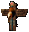

Britain 図書館
| 画像 | 名称 | 付加プロパティ |
 |
Reading Glasses Of The Trades [商人のメガネ] |
STR ： 10
INT ： 10 抵抗値 ： 10/10/10/10/10 |
| Folded Steel Reading Glasses | STR ： 8
Night sight 回避 ： +15％ 抵抗値 ： 20/10/10/10/10 |
|
 |
Reading Glasses Of The Arts | STR ： 5
INT ： 5 ヒットポイント ： +15 抵抗値 ： 10/8/8/4/10 |
 |
Mace And Shield Reading Glasses | 回避低下 ： 30％
STR ： 10 DEX ： 5 抵抗値 ： 25/10/10/10/10 |
 |
Lyrical Reading Glasses [リリカルグラス] |
回避低下 ： 20％
Night sight 物理ダメージ反射 ： 15％ 抵抗値 ： 10/10/10/10/10 |
| Anthropomorphist Reading Glasses | ヒットポイント ： +5
マナ回復 ： 3 抵抗値 ： 5/5/10/20/20 |
|
 |
Necromantic Reading Glasses [ネクロマンサーグラス] |
マナコスト ： -15％
秘薬コスト ： -30％ |
 |
Wizard's Crystal Reading Glasses [ウィザードクリスタルグラス] |
マナ ： +10
マナ回復 ： 3 魔法ダメージ ： +15％ 抵抗値 ： 5/5/5/5/5 |
 |
Maritime Reading Glasses | Night sight
幸運 ： 150 物理ダメージ反射 ： 20％ 抵抗値 ： 3/4/30/5/3 |
| Treasures And Trinkets Reading Glasses | INT ： 10
ヒットポイント ： +5 魔法ダメージ ： +10％ 抵抗値 ： 10/10/10/10/10 |
|
 |
Poisoned Reading Glasses | スタミナ ： +3
スタミナ回復 ： 4 抵抗値 ： 10/10/10/30/10 |
| Light Of Way Reading Glasses | STR ： 7
INT ： 5 武器ダメージ ： +30％ 抵抗値 ： 10/10/10/10/10 |
|
| Treatise On Alchemy [図書館タリスマン 錬金術論文] |
Alchemy高品質 ： +11〜30％
Alchemy成功率 ： +11〜30％ Magery ： +5 ポーション強化 ： 15％ |
|
 |
A Primer On Arms Damage Removal [図書館タリスマン 武器入門] |
Damage Removal効果
STR ： 1 ヒットポイント回復 ： 2 武器ダメージ ： +20％ |
|  | My Book [図書館タリスマン 私の本] |
Inscription高品質 ： +11〜30％
Inscription成功率 ： +11〜30％ INT ： 5 マナ ： ＋2 |
 |
Talking to Wisps Ward Removal [図書館タリスマン ウィスプとの会話] |
Ward Removal効果
Spirit speak ： +3 Evaluating intelligence ： +5 |
|
A Grammer Of Orcish [図書館タリスマン オーク語文法] |
Orc Brute summoning効果
〜 プロテクト ： 5〜60％ Resistance ： +5 Anatomy ： +7 |
| Birds of Britannia Random Summoner [図書館タリスマン ブリタニアの鳥類] |
〜 summoning効果
Animal taming ： +5 Animal lore ： +5 特効 ： バード |
|
|
The Life of a Traveling Minstral Curse Remover [図書館タリスマン 吟遊詩人の旅] |
Curse Removal効果
〜 プロテクト ： 5〜60％ Provocation ： +5 Musicianship ： +5 |